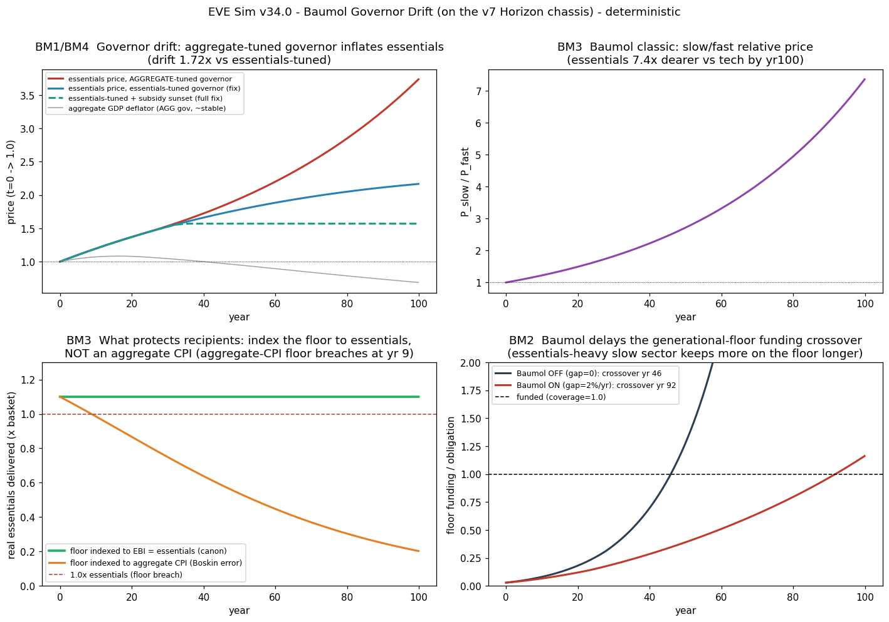

In plain language
Companion to RESULTS - v34.0 Baumol Governor Drift.md. This cell answers a classic economist's objection (the "Baumol" one) on the same hundred-year "Horizon" world we built in v7. Like v7, it's a thought experiment with discipline, not a forecast — the most speculative kind of model we run, and it says so.
What "cost disease" is (in one breakfast)
Some things get cheaper every year because machines get better at making them — TVs, solar panels, software. Other things stubbornly don't, because they are human time: a haircut, a nursing shift, a music lesson, childcare, an hour of therapy. This is Baumol's cost disease: over decades, the stuff that can't be automated gets more and more expensive relative to the stuff that can. A TV that cost a week's wages now costs an afternoon's; an hour of eldercare costs more than it used to. Nobody did anything wrong — it's just that productivity races ahead in one place and crawls in another.
Now here's the sharp question for EDEN. EDEN's currency has a "governor" — an automatic rule that decides how much new money to create, aimed at keeping prices stable. But which prices? If the governor watches the whole economy's average productivity, the average is dragged upward by the fast, cheapening tech sector. Tune the money supply to that racing average, and you'll quietly let the slow things — the care, the essentials — keep getting more expensive, because you were watching the wrong dial. Over a century, could that drift break EDEN's promise: the floor, the funding, or price stability?
First, we checked our own ruler (BM0)
Before testing anything new, we re-ran the actual v7 engine and reproduced its headline exactly — the generational floor funds itself at year 65 (year 64 on the second random seed; the two agree). And we confirmed that when we switch the cost-disease split off, our new two-sector model collapses back to a plain one-sector world with zero drift. Our ruler is straight. (Everything here is deterministic — same inputs, same answer every time; we checked the output file is byte-for-byte identical across two runs.)
What we found
1. The drift is real, and the governor is blind to it. With a fast sector growing 2.5%/yr and a slow "care" sector growing 0.5%/yr, EDEN's whole-economy governor lets the price of essentials climb to 3.74× over the century — versus 2.17× if the governor had watched the slow sector instead. The unsettling part: the governor's own dashboard says "prices are stable" the entire time. The average holds flat only because cheap tech is falling exactly as fast as care is rising. It's a genuine blind spot — exactly the objection the economist raised.
2. But it does not hurt the people — because of a choice EDEN already made. Here's the reassuring result. EDEN doesn't tie its safety-net floor to a headline "average price." It ties the floor to the essentials basket itself (the EBI — the real cost of food, shelter, care). So when care gets dear, the floor automatically rises to match, and the floor's promise tracks a full basket of essentials, every single month, for the whole century — the drift and all. (One honest footnote, added July 12: that's the promise the floor is indexed to. What actually gets paid out equals that promise times how funded the floor is — and in this century-scale run the floor's own self-funding bottoms out near 12% for decades before the economy matures around year 92, with sponsors covering the rest, same as every other run in this vault. Baumol doesn't cause that — it's the already-known bootstrap-funding question — but a reader should not take this paragraph as "delivery was never rationed.") To show how load-bearing that choice is, we tried the naive alternative — pegging the floor to the average price instead. It fell below a full basket within 9 years and delivered only a fifth of one by year 100. Same world, one indexing decision, opposite outcomes for vulnerable people. Tying the floor to essentials — not to an average — is exactly what disarms cost disease where it counts.
3. The real bill Baumol sends is time, not hunger. The one thing the cost disease genuinely delays is the beautiful v7 result — "by year 65 the accumulated work of the dead pays for every living person's essentials." Because care stays expensive, low earners lean on the essentials floor for longer, so that self-funding moment slides from year 46 to year 92 in this model — nearly off the edge of the century. The dream still arrives; cost disease just makes humanity wait longer for it. That's an honest cost, and we report it.
4. The fix — and why it takes two hands, not one. The obvious repair is to make the governor watch the essentials sector (the same basket the floor already uses) instead of the whole-economy average. That helps a lot — it cuts the drift by nearly two-thirds — but it doesn't finish the job, because of a second rule tugging the other way. v7 has a "never let the mint dry up" floor (the Exploration Subsidy that funds dreamers during the early decades). At century scale that guarantee keeps money growing a bit faster than the slow sector, so essentials still creep up. The clean fix needs both levers, and v7 already anticipates both: point the governor at essentials, and let the early-decades subsidy sunset once the knowledge economy can pay its own way (v7 always expected this). Do both, and the drift vanishes entirely — essentials go flat. Neither lever alone is enough; together they work.
So, did Baumol win?
Partly — and EDEN partly conceded on purpose. The cost disease is real, the governor as written is blind to it, and money-printing for essentials does drift. But the design chose its side of this fight in advance: protect people by pegging the floor to real essentials, and accept that "average price stability" is the wrong target when tech and care pull apart. That choice holds up over a simulated century — the poorest are never short a basket. What's left is a to-do list, not a wound: aim the governor at essentials too, retire the early subsidy on schedule, and remember that cost disease makes the generational safety net take longer to pay for itself.
What this run is, and isn't
It isn't a forecast — a hundred-year model with cost disease dialed in by hand and world adoption assumed is a disciplined thought experiment, not a crystal ball. It's a reduced-form extension of v7 ("reduced-form" just means deliberately simplified down to the parts that matter for this one question — here, two sectors, with everything irrelevant to cost disease turned off), and it leans on v7 — the tested engine it's built on top of, what we call the "chassis," like building a new test rig on a proven car frame — for the parts it doesn't re-derive; which is why we re-ran v7's real engine to anchor it. What it is: a pre-registered, reproducible check of whether one of economics' oldest objections breaks EDEN's promises — with the failures printed at the same size as the wins, and the fix named where we found one.
Filed July 11, 2026 — discharging the economics red-team's Baumol objection (A10) on the v7 Horizon chassis. Every claim traces to results_v34.json; both pre-registered failures reported in full.
Figures

Technical results
Run: July 11, 2026. SPEC registered before execution; bars BM0–BM4 unchanged. Code: baumol_governor_sim.py; outputs: results_v34.json, fig_v34_baumol.png. Deterministic (no Monte Carlo — relative-price drift is a deterministic phenomenon; verified byte-identical across two runs, MD5 1653ec06…). Seeds 7 + 11 used only for the BM0(a) re-run of the committed v7 engine, where they agree. Plain-language companion: PLAIN LANGUAGE - v34.0 Baumol Governor Drift.md. Discharges economics red-team A10 (Baumol / cost disease). Built on the v7 Horizon chassis — v7's governor, constant-velocity essentials-price rule, EBI-indexed floor, and committed parameters, with a two-sector productivity split bolted on. Inherits v7's stated humility: the Horizon model is the program's most speculative — existence/robustness under stated dials, not a forecast.
Scoreboard
| Bar | Test | Result | Verdict |
|---|---|---|---|
| BM0 Regression anchor | Baumol-split OFF reproduces v7; seeds agree | v7 crossover 784 mo / yr 65.3 (seed 7), 764 mo / yr 63.7 (seed 11) — agree; gap=0 → drift 0.000, delivery 1.10, rel-price 1.000000 | PASS |
| BM1 Governor drift | aggregate-tuned governor over-mints vs slow-sector prices; drift ≥ 1.5× | essentials price ends 3.74× (aggregate gov) vs 2.17× (essentials-tuned) → drift 1.72×; sign = over-mint (essentials inflation) while the aggregate deflator is held ~flat (ends 0.69, −0.6%/yr) | PASS |
| BM2 Does it break the floor? | delivery ≥ 1.0 AND funding covered in steady state | delivery-by-indexing 1.10× held all century (drift absorbed); drift does not worsen funding (agg coverage 1.13× the essentials-tuned) — but Baumol delays the generational-floor crossover from yr 46 (OFF) to yr 92 (ON), so "funded by yr 20" fails | FAIL (informative) |
| BM3 Baumol classic + EBI tracks | rel-price ≥ 3×; EBI floor ≥ 1.0; aggregate-CPI floor < 1.0 | slow/fast relative price 7.36×; EBI-indexed floor delivers 1.10× throughout; aggregate-CPI-indexed floor breaches 1.0 at yr 8.8, collapses to 0.20× by yr 100 | PASS |
| BM4 Governor fix | essentials-tuned governor holds essentials ±15% AND cuts drift ≥ 90% | reduces drift 62% (2.17× vs 3.74×) but essentials still +81% — the c_min Exploration-Subsidy floor forces money > slow-sector growth all century (c pinned at 0.25). Finding: essentials-index + post-bootstrap subsidy sunset removes it entirely (drift −100%, essentials flat) |
FAIL (informative → constructive fix found) |
Three of five pass. The two failures are the cell's findings — both refute a pre-registered PASS expectation in public (the program's most valuable kind of result), and BM4's failure comes with the fix that works.
The answer to A10 (Baumol), in four parts
1. Does the aggregate-tuned governor drift against the slow sector? — Yes, and it can't see it (BM1). With a fast sector at 2.5%/yr and a slow (care/essentials) sector at 0.5%/yr productivity, EDEN's v7 governor — which targets aggregate (Divisia real-GDP) productivity growth — steers money growth to the aggregate rate. That is too fast for the slow sector: the essentials price ends the century at 3.74× its start, versus 2.17× under a governor tuned to the slow sector — a 1.72× governor-choice drift. The trap is that the governor is achieving price stability by its own gauge: the aggregate GDP deflator ends flat-to-falling (0.69×, −0.6%/yr). Cheapening tech goods (P_fast ends 0.51×) mask rising care inside the stabilized basket. The governor believes it has price stability; essentials do not. This is exactly the registered objection.
2. Does the drift break the floor? — No, on delivery; but Baumol delays the funding (BM2). The thing that actually matters — real essentials delivered to recipients — is protected: because the floor is indexed to the EBI (the essentials basket), delivery holds at 1.10× essentials every month of the century, entirely governor-independent (the drift is absorbed on the delivery side). And the drift does not starve the floor — the aggregate governor's over-minting actually leaves funding 1.13× higher than the essentials-tuned governor at year 100. What Baumol breaks is the timing of the generational-floor crossover. Because essentials get relatively dearer, low earners' essentials purchasing power grows at only the slow rate (0.5%/yr), so they stay on the essentials floor far longer; the crossover where Ancestral-Dividend + slices fully fund the floor slides from year 46 (Baumol OFF) to year 92 (Baumol ON) — nearly off the century. The floor is still eventually self-funded (coverage ends 1.16×), but at an essentials-heavy world (50% essentials share) Baumol pushes the v7 crown result — "the generations become the sponsor by year 65" — out to the century's very edge. (BM2 was pre-registered to PASS "absorbed"; the delivery half is confirmed, the funding-timing half fails — informative.)
3. The Baumol classic, and what protects recipients (BM3 PASS — the load-bearing result). The slow-to-fast relative price rises 7.36× over the century (and scales exponentially with the gap: 2.71× at 1%/yr, 7.36× at 2%, 19.96× at 3%). Care gets dear against tech, exactly as Baumol says. The EBI-indexed floor tracks it and delivers 1.10× essentials throughout — recipients are protected even as the governor mis-sets aggregate mint. The contrast makes the mechanism unmistakable: a floor indexed to an aggregate CPI instead (the Boskin / index-number error — red-team A3) breaches 1.0× at year 8.8 and collapses to 0.20× by year 100, because the aggregate CPI is held flat by the very tech-cheapening that hides the care inflation. EDEN's choice to index the floor to the essentials basket — not a headline CPI — is precisely what defuses Baumol on the side that matters.
4. The fix, and why one lever isn't enough (BM4 FAIL → constructive). Indexing the governor to the essentials sector (the same EBI the floor uses) instead of aggregate output cuts the drift by 62% — but does not remove it. The reason is a collision between two canon mechanisms: v7's c_min = 0.25 Exploration-Subsidy floor guarantees a minimum mint, which at century scale is a ~1.7–2.6%/yr money-growth floor — faster than the slow sector's 0.5%/yr real growth — so essentials still inflate +81% and the mint coefficient sits pinned at c_min for the whole century. The full fix needs both levers, and both are already anticipated by v7: index the governor to essentials and sunset the Exploration Subsidy once endogenous machine-pay matures (v7's own RESULTS note c rising above c_min after ~3 decades). Retiring the subsidy over years 30→40 with the essentials-tuned governor drives the residual drift to zero — essentials price flat after the sunset (Δln P ≈ 0, drift reduction −100%). (v5 registration note, July 12: the sunset window (months 360→480) is a hardcoded, un-swept constructive lever — the SPEC anticipated sunsetting in prose but registered no bar for it, so read the −100% as a demonstrated existence proof of a fix, not a registered result; the registered BM4 clause (essentials-governor alone, ≥90% drift cut) honestly FAILS at 62%. The post-sunset flatness is also partly structural: this cell's governor is an idealized direct rule — see Honest limits.) Neither indexing the governor nor sunsetting the subsidy alone suffices; aligned, they eliminate the drift.
Canon implications (candidates, not decisions)
Two one-line amendments, in the spirit of v7's c_min discovery:
- Index the mint governor to the EBI (essentials), not to aggregate output — the same basket the floor already uses. (Removes the governor-choice drift, BM1/BM4.)
- Sunset the Exploration-Subsidy floor (c_min) once machine-pay matures — otherwise it becomes a permanent floor under essentials inflation. (v7 already expects c to rise above c_min; make the retirement explicit.)
- Keep indexing the floor to the essentials basket, never an aggregate CPI — BM3 shows this is the single mechanism that protects recipients from Baumol (and from Boskin/A3). This is already canon; v34 is its century-scale stress test, and it holds.
Honest limits
Reduced-form, disclosed (SPEC "Honest limits"). Productivity is exogenous (v7's is endogenous via the knowledge stock) — we split growth around v7's realized aggregate rate. The floor funding path uses v7's routing (10% slice + Ancestral Dividend) with a deterministic steady-state ancestral share, not v7's stochastic demography — so the literal v7 crossover (year 65) is anchored in BM0(a) by re-running the committed engine, while this cell's own Baumol-OFF crossover (year 46) is a reduced-form baseline; the BM2 finding is the Baumol delay relative to that baseline (46 → 92), not the absolute year. The transparency/firm game is omitted (orthogonal to Baumol). At the registered essentials-heavy share (s_slow0 = 0.50) the floor inherits the v5.1/v13.1 funding-base mismatch independent of Baumol (coverage stays < 1 until late even Baumol-OFF) — v34 does not solve that; it shows Baumol worsens the timing and that delivery-by-indexing survives it. Canon v1.4 (floor never prints) is enforced — the underfunded floor is rationed, not printed (an early build without this reproduced v13.1's floor-print wage-price spiral; corrected to canon, disclosed here rather than buried). Price-inelastic essentials demand is an assumption; the Divisia value-weighted aggregate is the primary governor input (a fixed-basket aggregate would drift more, noted not swept exhaustively). Constant velocity (v6/v7 caveat). Governor fidelity (v5 note): this cell re-implements v7's governor as an idealized direct rule (net mint tracks the indexed growth target exactly; v7's gov_tol tolerance band, c0, and burn_fr are carried in params for provenance but are dead dials here) — so BM4's "essentials perfectly flat post-sunset" is partly a property of the direct rule; v7's real feedback controller would leave residual wobble inside its tolerance band. The BM0(a) regression runs the committed v7 engine itself, so the chassis anchor is unaffected. Every number above traces to results_v34.json. Treat all magnitudes as shape, not forecast.
Bottom line
On the v7 Horizon chassis, with pre-registered bars and two published failures: Baumol is real and the governor is genuinely blind to it — tuned to aggregate productivity, EDEN's mint over-issues against the slow essentials sector and lets essentials inflate 1.72× more than a slow-tuned governor would, all while its aggregate price gauge reads "stable." But the objection lands on price stability, not on the people: because EDEN indexes the floor to the essentials basket (not an aggregate CPI), the floor's promise tracks real essentials prices undiminished across the whole century, drift and all — where an aggregate-CPI floor's promise would have eroded to a fifth of a basket by year 100. (Precisely: what recipients receive is that indexed promise times the funding coverage — and Baumol does not starve the funding; it only delays the generational-floor crossover (BM2). The rationing of actual delivery during the bootstrap era is the separate, already-known v5.1/v13.1 funding-base question, not a Baumol effect — so this is a statement about the indexing, which is what disarms Baumol for recipients, not a claim that delivery is un-rationed.) The costs Baumol does impose are (a) essentials-price instability, fixable by indexing the governor to essentials too and sunsetting the Exploration Subsidy — both already anticipated in v7 — and (b) a delayed generational-floor crossover (year 46 → 92), the honest reminder that a slow essentials sector keeps the poor dependent on the floor longer. EDEN chose its side of Baumol consciously (protect people via essentials-indexing); v34 confirms the choice holds at the horizon, names the two governor amendments that also buy price stability, and prices the delay Baumol imposes on the dream of the generations funding the floor.
Raw data